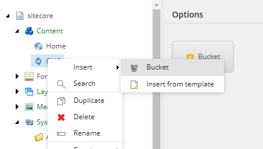

Walkthrough: Configuring items for content import
How to configure Sitecore items for import from Sitecore Content Hub.
In order to import content from Sitecore Content Hub, you must create and configure a number of items in Sitecore.
This walkthrough describes how to create the following mandatory items:
Bucket- specify where to store imported content.Template- define the structure of imported content items.Entity mappingandField mapping- determine how imported content is imported and where it is stored.
The walkthrough also describes how to create the following optional items that control how relation content from Content Hub is processed:
Relation field mapping- map relation content to Sitecore fields.Tag field mapping- map relation content to Sitecore tags.Related entity mapping- link different Content Hub asset types in Sitecore.
Create a bucket
All the imported content is stored in Sitecore buckets. For example, all blog posts are stored in a bucket called Blogs.
To create a bucket:
Right-click the CMP folder, click Insert, and click Bucket.
Name the bucket, for example, Article, and click OK.
Create a template
The structure of the imported content is defined by the Sitecore templates. You must make sure that each template inherits the Content Hub Entity template. This template contains the EntityIdentifier field.
To create a template:
Navigate to a CMP folder, for example, templates\User Defined\CMP Connect. Create a template and name it, for example, Blog.
Add all the necessary fields. For example, for a blog post, add a Title Single-Line Text field and a Body Multi-Line Text field.
On the Content tab, in the Data section, in the Base template field, click Content Hub Entity and then click the right arrow to add it to the Selected list.
On the menu bar, on the View tab, select Standard Fields and Buckets.
On the menu bar, on the Builder Options tab, select Standard Values.
On the Content tab, in the Item Buckets section, select Bucketable. Save the item.
Create an entity mapping
Entity Mapping items and Field Mapping items define how content is imported and in what bucket it is stored.
To create an entity mapping item:
Navigate to /sitecore/system/Modules/CMP, right-click Config, click Insert, and click Entity Mapping. Enter the name for the new item, for example Article. By default, every entity mapping comes with a default field mapper for the display name.
Under the Article entity mapping, select
/__Display name. On the Content tab, in the CMP Field Name field, enter a valid Property field name from the entity type, or schema, in Sitecore Content Hub. Sitecore uses this name as the display name.Save the item.
In the content tree, navigate to the
Articleentity mapping.
On the Content tab, in the Data section, fill in the following fields:
Field
Content
Entity Type Schema
Enter the entity type used in Sitecore Content Hub
Bucket
Enter the item bucket to keep Sitecore items created from M-Entities of a given content type ID
Template
Enter a template to be used to create the Sitecore items. The template must contain the fields that are used to store the imported content
Item Name Property
Enter a valid Property field value of the entity type as Sitecore item name
Save the item.
Create a field mapping
To map imported content to the Sitecore item structure, you must add Field Mapping items to each Entity Mapping item. You must create a Field Mapping item for each field that you want to import.
To create a Field Mapping item:
Right-click the Entity Mapping item that you created earlier, click Insert, and then click Field Mapping.
Enter a name, for example, Title, and click OK.
On the Content tab, in the Data section, fill in the following fields:
Field
Content
CMP Field Name
The name of the field in the Sitecore Content Hub
Sitecore Field Name
The field name as defined in the template you are using
You can add as many Field Mapping items as you require.
To verify the entity type and structure in the Sitecore Content Hub:
Create a new item in the Sitecore Content Hub or edit an existing one, for example, a blog post.
Copy the URL, for example,
https://yourdomain/en-us/content/detail/9782, and paste it in a new browser tab.Note
In the example URLs, replace 9782 with the ID of the entity item you have selected.
Change the URL to
https://yourdomain/api/entities/9782and press Enter.The entity structure is now shown in JSON.
To find the entity’s content type, find the ContentTypeToContent relation and follow the link (
"href": "https://yourdomain/api/entities/9782").
Now the content type is shown, in this example
M.ContentType.Blog.
Create a relation field mapping
You can add relation field mappings which let you map the taxonomy fields from any content in Sitecore Content Hub to a Sitecore field. If the content belongs to multiple taxonomy values, the mapping separates the values using the configured delimiter.
To create a relation field mapping item:
Right-click the Entity Mapping item that you created earlier, click Insert, and then click Relation Field Mapping.
Enter a name, for example, Audiences, and click OK .
In the Data section, fill out the following fields:
Field
Content
CMP Relation
The relation name of the Sitecore Content Hub entity.
CMP Field Name
The name of the property in the Sitecore Content Hub relation entity.
Sitecore Field Name
The name of the content field where Sitecore stores the taxonomy values, as defined in the template you are using.
The Data section should look, for example, like this:
Create a tag field mapping
Tag field mapping lets you map the taxonomy fields from any content in Content Hub to the tag repositories in Sitecore. If the content belongs to multiple taxonomy values, the mapping separates the values using the configured delimiter.
To create a tag field mapping:
Right-click the Entity Mapping item that you created earlier, click Insert, and then click Tag Field Mapping.
Enter a name, for example, Tag Taxonomy. Click OK.
In the Data section, fill out the following fields:
Field
Content
CMP Relation
The relation name of the Sitecore Content Hub entity.
CMP Field Name
The name of the property in the Sitecore Content Hub relation entity.
Enable / Disable to store Non-Leaf Node
Choose one of the following:
Enable Non-Leaf Node (Default)
Disable Non-Leaf Node
Store Tag Name Option As
Choose one of the following:
Full Path Name (Default)
Node Name
Custom Taxonomy Provider Name
The name of a Sitecore custom taxonomy provider. If you select a custom taxonomy provider, Sitecore stores the taxonomy in the custom provider instead of in the default taxonomy provider. Leave this field blank to use the default taxonomy provider.
Note
See Build a custom taxonomy providerBuild a custom taxonomy provider in the Sitecore developer documentation for information on how to create custom taxonomy providers.
The Data section should look, for example, like this:
For more information on how the tag field mapping settings work, refer to the Sitecore developer documentationSitecore developer documentation.
Create a related entity mapping
Related entity mapping lets you map any entity relation in Content Hub to a field in Sitecore.
To create a related entity mapping item:
Right-click the Entity Mapping item that you created earlier, click Insert, then click Related entity mapping.
Name the entity mapping, for example, PCMProductToMasterAsset, and click OK.
In the Data section, fill out the following fields:
Field
Content
CMP Relation
The relation name of the Sitecore Content Hub entity.
Sitecore Field Name
The name of the content field where Sitecore stores the taxonomy values, as defined in the template you are using.
The Data section should look, for example, like this: